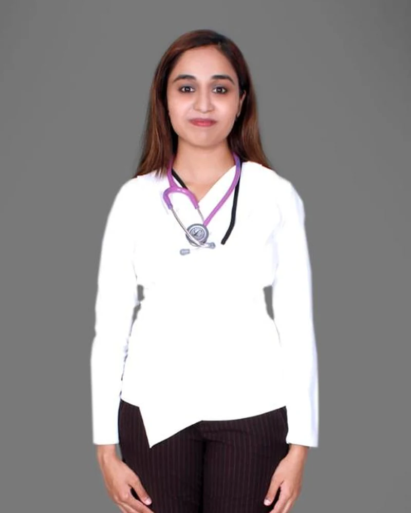

Biographical Background
About Dr. Firdous Shaikh
Diabetologist, Thyroid & Weight Management Physician
MBBS
Dip. Diab (RCP UK)
CPS Diabetology (Mumbai)
Fellow, ISCM
Fellow, Diabetes India
Endocrine & Diabetology Training
Asian Heart Institute (BKC) • Royal College of Physicians (UK)
Frontline COVID-19 Leadership
BKC Dedicated COVID Centre • Felicitated by the Mayor of Mumbai
Advanced Clinical Education
Harvard Medical School (2024) • Emory School of Medicine (2024)
Consultation Locations
Bandra West (Jyoti Clinic) • Mira Road East (Niramay Centre)
Clinical Heritage & Background
Medical Training & Clinical Journey
Dr. Firdous Shaikh trained in Medicine (MBBS) at Zhejiang University School of Medicine in China. She completed her internship there in 2012 and cleared the Foreign Medical Graduate Examination in India on the very first attempt. She practised in Emergency Medicine as a Chief Medical Officer at Lady Hardinge Medical College in Delhi. Emergency work instils rapid clinical decision-making and clear communication, principles that continue to guide her daily clinical practice.
Diabetes drew Dr. Shaikh's interest because it is a condition where physicians can create progressive, tangible improvements in people living with multiple chronic health conditions. Dr. Shaikh completed Diabetology training at the Asian Heart Institute in Mumbai (BKC), working in the Department of Diabetology and Endocrinology with a focus on perioperative diabetes care. She went on to earn a postgraduate qualification in Clinical Endocrinology and Diabetes from the Royal College of Physicians, UK.
From 2020 to 2022, Dr. Shaikh served as a Consultant Diabetologist at the BKC Dedicated Covid Health Centre in Mumbai (one of the largest Covid centres in Mumbai and across India), managing over 500 patients with diabetes concurrently. She designed and implemented a real-time glucose monitoring chart workflow that allowed the multidisciplinary clinical team to identify immediately which patients required urgent medical attention. Dr. Shaikh was felicitated by the Mayor of Mumbai, Kishori Pednekar, for this frontline service.
Dr. Shaikh sees patients at Jyoti Clinic in Bandra West and at Niramay Diabetes Centre in Mira Road East. She has organised multiple diabetes screening camps for school students, Mumbai police personnel and underserved communities, and has pursued advanced clinical education. In 2024, Dr. Shaikh completed a Certificate Course in Clinical Diabetology and Obesity with Harvard Medical School and an Advanced Clinical Diabetes programme with Emory School of Medicine (USA).
Alongside patient consultations, Dr. Shaikh actively conducts clinical research and medical writing. Her academic work has been presented at ATTD (Advanced Technologies & Treatments for Diabetes). The ATTD Breakthrough Outcomes Award was presented to Dr. Firdous Shaikh in March 2025 in Amsterdam. She has co-authored 12+ research papers on diabetes, obesity, and diabetes and technology, presented at national and international platforms.
What Dr. Shaikh cares about most
The Emotional Side of Diabetes
Diabetes distress is real and under-recognised. Dr. Shaikh co-authored milestone validation research on the Modified Diabetes Distress Scale (mDDS) for the Indian population.
Women & Diabetes
Dr. Shaikh founded the DAWN Foundation (Diabetes and Women's Network) in 2025 to focus on continuity of care in diabetes, obesity and chronic conditions, and mental wellbeing.
Learn more about DAWN Foundation →Global Advocacy
Dr. Shaikh is a strategic partner of T1International, a patient-led organisation working for affordable insulin and diabetes care, and is an advisory board member for diabetes organisations in Africa.
Timeline
-
2012MBBS, Zhejiang University School of Medicine, China
-
2013 to 2014Chief Medical Officer, Emergency Medicine, Lady Hardinge Medical College, Delhi
-
2015CPS Diabetology, Asian Heart Institute, Mumbai
-
2016 to 2017Postgraduate Resident, Diabetology and Endocrinology, Asian Heart Institute
-
2017 to 2018Associate Consultant Diabetologist, Mumbai
-
2019Postgraduate qualification in Clinical Endocrinology and Diabetes, Royal College of Physicians (UK)
-
2020 to 2022Consultant Diabetologist, BKC COVID Health Centre
-
2020Co-founder, A Sweet Life Diabetes Care and Research Foundation
-
2024Harvard Medical School certificate course; Emory School of Medicine advanced course
-
2025Fellowship, Diabetes India; Founded the DAWN Foundation
Fellowships
Fellowship, Diabetes India
Conferred 2025
Fellowship, Indian Society of Chrono Medicine
Conferred 2024
Corporate Leaders Fellow, LedBy Organization
Conferred 2024
Memberships & Medical Registrations
- MMC Reg. No. 2015030842 (Maharashtra Medical Council)
- MCI Reg. No. 13-48070 (Medical Council of India)
- RSSDI (No. 8568)
- American College of Physicians (No. 03833877)
- United Diabetes Forum (No. UDF5080097)
- Indian Medical Association (Life Member)
- Diabetes Research and Welfare Association (DRWA)
- Indian Society of Chrono Medicine
- Clinical Cardio Diabetic Society of India
- Lipid Association of India (Honorary Member)
- ISPAD (International Society for Pediatric and Adolescent Diabetes)
- PSAD (Psychosocial Aspects of Diabetes Study Group)
- American Diabetes Association
- Life Member, All India Association for Advancing Research in Obesity
Affiliations & Leadership Roles
- IIM Ahmedabad, Executive Education
- Strategic Partner, T1International
- Emerging Leader, Mumbai City Chapter, Physician Association of Nutrition (PAN)
- Advisory Board Member, SOO-DAWI
- Advisory Board Member, Liberia Diabetes Alliance
- Corporate Leaders Fellow, LedBy Organization (2024)
- Member, Green Pencil Foundation
- Founder, DAWN Foundation (Diabetes and Women's Network)
- Indian Medical Association: Managing Committee Member, Maharashtra State Executive Committee Member and Central Council Committee Member, 2026 to 2027
Recognition
Have a question about your reports or treatment plan?
Whether you have prediabetes, diabetes, a thyroid condition or difficulty managing your weight, Dr. Shaikh can review your reports and discuss the next step with you. Please bring all previous reports, even the old ones.
Book a consultation